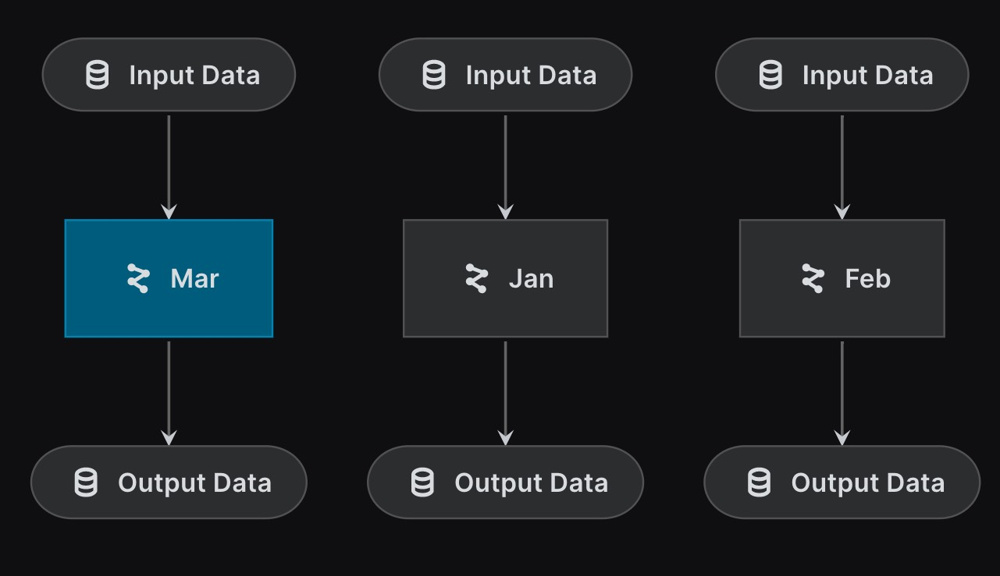

def make_monthly_predictions(input_data):
output_data = "dummy"
return output_dataKedro support Namespace Pipeline, which is a flexible way to re-use pipeline. If your pipeline has some recursive structure and parallel fork, namespace pipeline may be a good candidate to achieve this. For example, it is handy for time-series forecasting.
Typically, time-series forecasts have a recursive structure, where the current prediction will become the input of next prediction. In this example, we will try to build up a recursive pipeline. First, let’s start with create a dummy node make_monthly_predictions and making sense of namespace.

from kedro.pipeline.modular_pipeline import pipeline
from kedro.pipeline import nodebase_pipeline = pipeline(
[
node(
func=make_monthly_predictions,
inputs=["input_data"],
outputs=["output_data"]
)
]
)This is a 1-node pipeline, which takes 1 month of data and make 1 month of prediction. The next step is create many similar pipelines with different input data. i.e. current prediction need to become input for next node. Kedro provide a feature call namespace pipeline, which can be used to override datasets argument easily.

namespace_pipeline = pipeline(
[
node(
func=make_monthly_predictions,
inputs=["input_data"],
outputs=["output_data"]
)
],
namespace="namespace"
)When the namespace argument is specified, it will add a prefix to the inputs and outputs automatically.
namespace_pipelinePipeline([
Node(make_monthly_predictions, ['namespace.input_data'], ['namespace.output_data'], None)
])Optionally, you may also want to keep the dataset without namespace by specifying which dataset you want to keep.SyntaxError: invalid syntax (677617201.py, line 1)namespace_pipeline = pipeline(
[
node(
func=make_monthly_predictions,
inputs=["input_data"],
outputs=["output_data"]
)
],
inputs = ["input_data"],
namespace="namespace"
)
namespace_pipelinePipeline([
Node(make_monthly_predictions, ['input_data'], ['namespace.output_data'], None)
])Notice that now the node take input_data instead of namespace.input_data. For time series data, we want to connect the output to the next input, you can do this by providing a dict
namespace_pipeline = pipeline(
[
node(
func=make_monthly_predictions,
inputs=["input_data"],
outputs=["output_data"]
)
],
inputs = {"input_data": "my_fav_data"},
namespace="namespace"
)
namespace_pipelinePipeline([
Node(make_monthly_predictions, ['my_fav_data'], ['namespace.output_data'], None)
])Build the time-series pipeline
Now we understand better how to use namespace, what we need to do is roughly 1. Create a base_pipeline 2. Iteratively loop through these pipeline and apply namespace 3. Connect these pipeline by updating the inputs or outputs definition
months = ["jan", "feb", "mar", "apr"]base_pipelinePipeline([
Node(make_monthly_predictions, ['input_data'], ['output_data'], None)
])def create_pipeline(months):
pipelines = []
for i in range(len(months)):
if i + 1 >= len(months): break
curr, next = months[i], months[i+1]
pipelines.append(pipeline(base_pipeline, namespace=curr))
return pipeline(pipelines) # Aggregate the pipelines
pipelines = create_pipeline(months)
pipelinesPipeline([
Node(make_monthly_predictions, ['feb.input_data'], ['feb.output_data'], None),
Node(make_monthly_predictions, ['jan.input_data'], ['jan.output_data'], None),
Node(make_monthly_predictions, ['mar.input_data'], ['mar.output_data'], None)
])
If we zoom in to focus on the pair of jan and feb, they are still not connected properly, so we need to update the pipeline to output as feb.input_data instead of jan.output_data.
Node(make_monthly_predictions, ['feb.input_data'], ['feb.output_data'], None),
Node(make_monthly_predictions, ['jan.input_data'], ['jan.output_data'], None),def create_pipeline(months):
pipelines = []
for i in range(len(months)):
if i + 1 >= len(months): break
curr, next = months[i], months[i+1]
pipelines.append(pipeline(base_pipeline,
outputs={"output_data":f"{next}.input_data"}, # Override the input definition
namespace=curr))
return pipeline(pipelines) # Aggregate the pipelines
pipelines = create_pipeline(months)
pipelinesPipeline([
Node(make_monthly_predictions, ['jan.input_data'], ['feb.input_data'], None),
Node(make_monthly_predictions, ['feb.input_data'], ['mar.input_data'], None),
Node(make_monthly_predictions, ['mar.input_data'], ['apr.input_data'], None)
])We can verify the pipeline with kedro viz